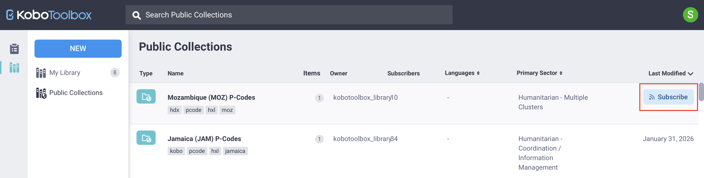

Parcourez la base de connaissances, explorez nos ressources et visitez notre Forum communautaire pour des informations plus détaillées
Dernière mise à jour : 20 Mar 2026
Les collections publiques permettent aux utilisateurs de KoboToolbox de partager et de réutiliser des questions d’enquête prédéfinies, des blocs de questions et des modèles complets. Lorsqu’une collection est rendue publique, elle devient accessible à tous les utilisateurs du même serveur KoboToolbox. Les collections publiques peuvent inclure des questions ou des groupes de questions couramment utilisés, tels que des caractéristiques démographiques ou d’autres indicateurs standard.
En rendant du contenu public, les utilisateurs contribuent à une bibliothèque partagée qui aide à standardiser les enquêtes et à promouvoir des mesures largement utilisées au sein de la communauté Kobo.
Cet article explique comment localiser, utiliser et créer des collections publiques dans la bibliothèque KoboToolbox.
Pour en savoir plus sur la bibliothèque KoboToolbox, consultez l'article Utiliser la bibliothèque de questions de KoboToolbox.
Pour accéder aux collections publiques depuis votre compte KoboToolbox :
Cliquez sur l’icône Bibliothèque dans le menu de gauche.
Ouvrez l’onglet Collections publiques.

Vous verrez une liste de toutes les collections publiques disponibles sur votre serveur, ainsi que le propriétaire de la collection, le nombre d’éléments, le nombre d’abonnés, les langues disponibles, le secteur primaire et la date de dernière modification.
Note : Les collections publiques sur le serveur KoboToolbox mondial et le serveur KoboToolbox Union européenne peuvent différer. Les collections ajoutées à un serveur ne sont accessibles que depuis ce même serveur.
Pour trouver une collection spécifique, vous pouvez parcourir la liste, trier ou filtrer les résultats, ou utiliser la barre de recherche pour saisir des mots-clés.
Pour créer une collection publique, vous devez d’abord créer une collection dans votre bibliothèque de questions. Depuis la bibliothèque de questions :
Cliquez sur NOUVEAU et sélectionnez Collection.
Saisissez un nom, une brève description, une organisation, un secteur primaire et un pays. Ces champs sont obligatoires pour rendre une collection publique.
Cliquez sur Créer.
Ajoutez au moins un élément de votre bibliothèque à la collection.
Ouvrez la collection et cliquez sur Rendre public.

Pour en savoir plus sur la création de collections dans votre bibliothèque, consultez l'article Utiliser la bibliothèque de questions de KoboToolbox.
Pour utiliser des éléments de collections publiques dans vos propres formulaires ou projets, vous pouvez vous abonner à des collections, récupérer des éléments individuels ou créer de nouveaux projets à partir de modèles publics.
S’abonner à une collection publique l’ajoute à Ma bibliothèque, ce qui vous permet d’accéder facilement à ses questions, blocs ou modèles et de les utiliser dans vos propres formulaires.
Pour vous abonner à une collection publique :
Survolez la collection et cliquez sur S’ABONNER à droite, ou
Ouvrez la collection et cliquez sur S’ABONNER dans la vue détaillée.

Pour retirer une collection de votre bibliothèque, cliquez sur SE DÉSABONNER.
Si vous ne souhaitez pas vous abonner à une collection publique entière mais avez uniquement besoin d’éléments spécifiques, vous pouvez les cloner ou les télécharger individuellement. Pour ce faire :
Ouvrez la collection contenant l’élément qui vous intéresse.
Survolez l’élément.
Cliquez sur Cloner pour l’ajouter à votre bibliothèque, ou sélectionnez Plus d’actions pour le télécharger en tant que fichier XLS ou XML.
Après avoir ajouté des questions d’une collection publique à votre bibliothèque, soit en vous abonnant à la collection, soit en clonant des éléments individuels, vous pouvez les réutiliser dans de futurs formulaires depuis l’interface de création de formulaires KoboToolbox (KoboToolbox Formbuilder).
Note : Seules les questions qui ont été ajoutées à Ma bibliothèque peuvent être insérées dans vos formulaires via le Formbuilder.
Pour utiliser des questions ou des blocs de questions d’une collection publique dans votre formulaire :
Ouvrez le Formbuilder.
Cliquez sur Ajouter à partir de la bibliothèque dans le coin supérieur droit.
Sélectionnez la question ou le bloc de questions que vous souhaitez ajouter, puis faites-le glisser et déposez-le à l’emplacement souhaité dans votre formulaire.
Si votre bibliothèque de questions contient de nombreux éléments, vous pouvez utiliser la fonction Recherche pour localiser rapidement la question ou le bloc dont vous avez besoin.

Note : Lorsque vous ajoutez une question de votre bibliothèque de questions à un formulaire, les modifications que vous apportez dans le formulaire n'affecteront pas la version originale enregistrée dans la bibliothèque.
Vous pouvez également utiliser un modèle d’une collection publique pour créer un nouveau projet de formulaire, soit depuis votre bibliothèque de questions, soit depuis la page d’accueil Projets.
Depuis la bibliothèque de questions
Vous pouvez créer un projet à partir d’un modèle dans Ma bibliothèque si vous êtes abonné à la collection, ou directement depuis Collections publiques :
Ouvrez la collection publique.
Survolez le modèle.
Cliquez sur Créer le projet à droite.
Saisissez un nom pour le nouveau projet.

Note : Vous pouvez créer un projet à partir d'un modèle dans une collection publique même si vous n'êtes pas abonné à cette collection publique.
Depuis la page d’accueil Projets
Vous pouvez également créer un projet à partir d’un modèle public directement depuis la page d’accueil Projets, à condition d’être abonné à la collection :
Cliquez sur NOUVEAU et sélectionnez Utiliser un modèle.
Choisissez un modèle enregistré et cliquez sur Suivant.
Saisissez les détails du projet et cliquez sur Créer le projet.
Dans les deux cas, un nouveau projet KoboToolbox sera créé, que vous pourrez modifier et déployer.
Note : La modification d'un projet créé à partir d'un modèle ne modifie pas le modèle original.
Dans Collections publiques, la barre de recherche prend en charge les requêtes simples et avancées. Par défaut, si vous saisissez un mot-clé sans spécifier de champ, le système effectue une recherche dans plusieurs champs, notamment le nom, le nom d’utilisateur du propriétaire, la description, les libellés de questions, les tags et l’UID. Les recherches ne sont pas sensibles à l’utilisation de majuscules et de minuscules par défaut.

Si vous souhaitez affiner vos résultats ou rechercher des champs spécifiques dans les collections publiques, vous pouvez utiliser les options de recherche avancée décrites ci-dessous.
La recherche avancée utilise un format structuré : field__subfield__operator:value.
Le préfixe field ou field__subfield définit le champ dans lequel vous effectuez la recherche (par exemple, le nom de la collection).
Le suffixe operator définit la façon dont la valeur est mise en correspondance.
Note : Utilisez un double tiret bas pour séparer chaque élément.
Voici des exemples de préfixes :
Préfixe |
Champ recherché |
|---|---|
|
Nom de l’enquête, de la collection, de la question, du bloc ou du modèle |
|
Nom d’utilisateur du propriétaire de l’élément |
|
Champ de description |
|
Libellés de questions et langues disponibles |
|
Tags attribués |
|
Identifiant unique (UID) de l’objet |
|
Champ de paramètres imbriqué, tel que la valeur du pays |
Voici des exemples de suffixes :
Suffixe |
Type de valeur |
Description |
|---|---|---|
|
Texte |
Correspondance exacte (sensible à l’utilisation de majuscules et de minuscules) |
|
Texte |
Le champ contient la valeur (sensible à l’utilisation de majuscules et de minuscules) |
|
Texte |
Le champ commence par la valeur (sensible à l’utilisation de majuscules et de minuscules) |
|
Texte |
Correspondance exacte (non sensible à l’utilisation de majuscules et de minuscules) |
|
Texte |
Correspondance par inclusion (non sensible à l’utilisation de majuscules et de minuscules) |
|
Texte |
Correspondance par début de valeur (non sensible à l’utilisation de majuscules et de minuscules) |
|
Numérique |
Nombre exact |
|
Numérique |
Inférieur à |
|
Numérique |
Inférieur ou égal à |
|
Numérique |
Supérieur à |
|
Numérique |
Supérieur ou égal à |
Par exemple, owner__username__icontains:team recherche les collections publiques dont le nom d’utilisateur du propriétaire contient le mot « team », quelle que soit la casse utilisée.
Note : Si aucun suffixe n'est ajouté, exact est utilisé par défaut. Ajouter i avant un opérateur de texte le rend non sensible à l'utilisation de majuscules et de minuscules.
Vous pouvez combiner des filtres à l’aide des opérateurs AND, OR et NOT pour obtenir des résultats plus précis.
Par exemple, owner__username__icontains:team AND tags__name__icontains:baseline effectue une recherche dans le champ du nom d’utilisateur du propriétaire et dans le champ des tags.
Avez-vous trouvé ce que vous cherchiez ? La traduction était-elle claire ? Manquait-il quelque chose ?
Partagez vos commentaires pour nous aider à améliorer cet article !